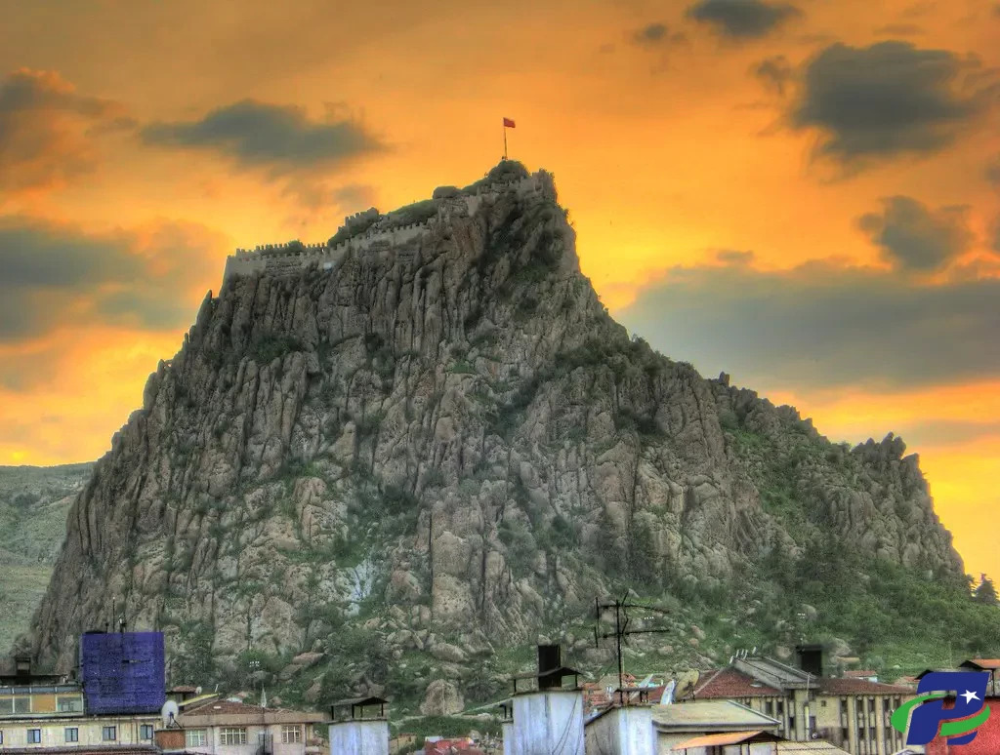
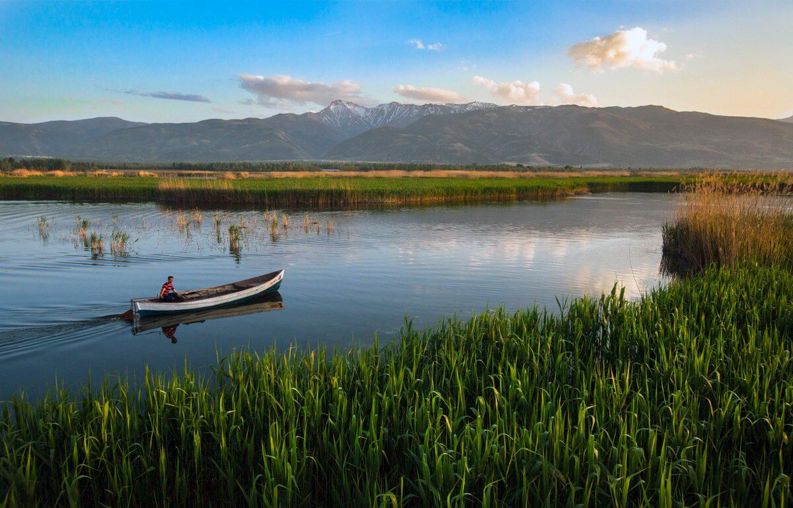
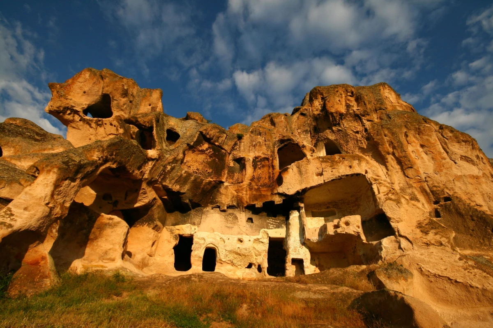
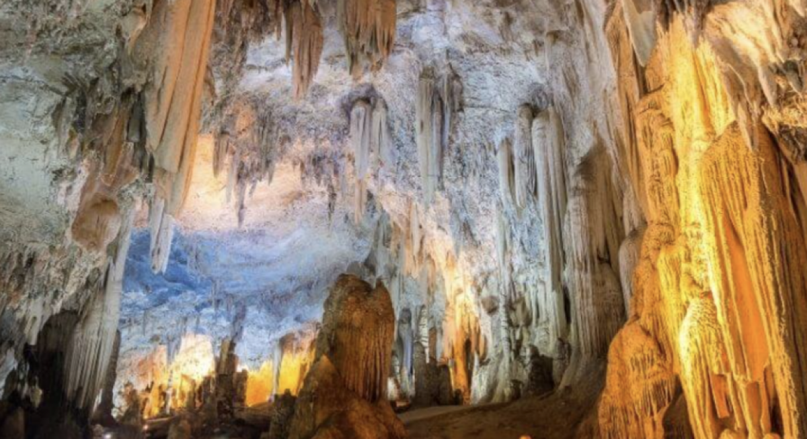

Afyonkarahisarda Gezilmesi Gereken Yerler
Karahisar Kalesi

İl merkezinde bulunan Karahisar Kalesi, volkanik bir kaya kütlesi üzerinde konumlanmış şekilde duran
tarihî bir yapı. Konumlandığı volkanik kaya kütlesinin 226 metrelik yüksekliği kaleyi eşsiz bir
manzaraya sahip hâle getiriyor. Bölgenin en eski tarihî yapılarından biri olma özelliğine sahip olan
Karahisar Kalesi’nin MÖ 1350 yılında Hitit İmparatoru II. Murşili tarafından inşa edildiği düşünülüyor.
Toplamda 546 basamaktan oluşan kale Afyon’u ayaklarınızın altına seriyor. Şehir merkezinde, Kent
Mahâllesi’nde konumlanan Karahisar Kalesi, Ulu Cami’nin hemen karşısında yer alıyor. Ulaşım için
toplu taşımayı ya da şahsi aracınızı tercih edebilirsiniz. Şehrin herhangi bir noktasından
bineceğiniz minibüsler ile ulaşım sağlayabilirsiniz. Kaleye girişler ise ücretsiz.
Sandıklı Hüdai Kaplıcaları

Çamur banyoları ile tanınmış bir termal tedavi merkezi olan Sandıklı Hüdai Kaplıcaları, Afyon’un
turistik açıdan en dikkat çekici yerlerinden biri. Kaplıcalarda bulunan suyun kas ağrıları, kadın
hastalıkları, sindirim sistemi bozuklukları ve romatizmal hastalıklar gibi pek çok hastalık için
şifa olduğu biliniyor. Kaplıca bölgesinde bulunan az kumlu killi toprak ve 68 derecelik termal su,
çamur banyosu yapılmasını sağlayan karışımın hazırlanması için kullanılıyor.
Sandıklı Hüdai Kaplıcalarında yer alan çok sayıda otel bulunuyor. Türkiye’nin Gastronomi Şehirleri
arasında yer alan Afyon’da konaklama için bu bölgede yer alan Afyon otelleri tercih edebilirsiniz.
Böylelikle hem kaplıcalardan faydalanabilir hem de oteller tarafından sunulan yöresel lezzetleri
tadabilirsiniz.
Hem ruhsal hem de fiziksel olarak ziyaretçilerini şifa olmayı amaçlayan Sandıklı Hüdai Kaplıcaları
her yıl binlerce yerli ve yabancı turist tarafından ziyaret ediliyor. Özellikle kış aylarında
oldukça kalabalık oluyor.
Zafer Müzesi

Başkomutan Meydan Muharebesinin taarruz emri verildiği bina, çeşitli restorasyon çalışmaları
geçirerek Afyonkarahisar Zafer Müzesi hâline getirilmiş durumda. Savaş hakkında bilgiler veren çok
sayıda envantere ev sahipliği yapan müze, Afyon için en önemli müzelerden biri. Müzenin Mustafa
Kemal Paşa, İsmet İnönü ve Fevzi Çakmak anısına kaldıkları odaların düzenlenerek ziyarete açıldığı
biliniyor.
2 katlı bir müze olan Afyonkarahisar Zafer Müzesi ilk katında 10 oda, 1 toplantı salonu; ikinci
katında ise 9 oda ve sergi salonundan oluşuyor. Yılın belirli zamanlarında müzede sanatsal ve
kültürel sergiler düzenleniyor.
Anıt Parkı Karşısında, Hükûmet Konağının ise yan tarafında bulunan Afyonkarahisar Zafer Müzesi’ne
şahsi aracınız veya toplu taşıma araçları ile ulaşabilirsiniz. Ücretsiz şekilde gezebileceğiniz müze
pazartesi günleri hariç her gün 09.00 ile 17.15 arasında ziyarete açık.
Eber Gölü

Yalnızca tarihi değil doğal güzellikleriyle de dikkat çeken Afyon’da mutlaka görülmesi gereken
yerlerden biri Eber Gölü olarak biliniyor. Sakarca kazlarına, karabataklara ve dalmaçya
pelikanlarına ev sahipliği yapan Eber Gölü oldukça renkli bir ekosisteme sahip. Türkiye’nin en büyük
12. gölü olma özelliğine sahip olan Eber Gölü, avcılar tarafından da yoğun bir ilgi görüyor. Göl
üzerinde hâlk tarafından “kopak” ismi ile anılan çok sayıda adacık bulunuyor. Göl 1992 yılından beri
1. dereceden tabiat sit alanı olarak koruma altında tutuluyor.
Bolvadin ve Çay ilçeleri arasında yer alan ve renkli eko sistemi ile saklı bir cennet olan Eber
Gölü’ne şahsi aracınız ile ulaşabilirsiniz. Giriş için herhangi bir ücret talep edilmiyor.
Frig Vadisi

55 hektar büyüklüğünde bir tabiat parkı olan Frig Vadisinin bundan 3.000 yıl önce Frigyalı’ların
oyarak yaptığı düşünülen kaya evlerine, kaleleri ve anıtlara ev sahipliği yaptığı biliniyor. Frig
Vadisi çevresinde kaya anıtları ve kaya yerleşimleri de bulunuyor.
Vadide Roma ve Bizans dönemine ait mezar odaları ve kiliseler bulunuyor. Frig Vadisinde yer alan
patikanın 5 yıllık bir çalışmanın ardından bulunduğu biliniyor. Bölgede kültürel ve doğa ile iç içe
turlar yapmak mümkün.
Frig Vadisine girmek için 10 TL ücret ödemeniz gerekiyor. Şehir merkezine 121 km uzaklıkta bulunan
vadiye turlar aracılığıyla ulaşabileceğiniz gibi şahsi aracınızla da ulaşabilirsiniz. Bunun yanı
sıra Afyon’dan İhsaniye otobüsüne binip kalan yolu taksi ile de gidebilirsiniz.
Buzluk Mağrası

Eğer Afyon seyahatinizi yaz aylarında planlıyorsanız Buzluk Mağarası’nı mutlaka gezilmesi gereken
yerler listenize eklemelisiniz! Üç kademeli bir mağara olan Buzluk Mağarası ilk girişi normal bir
ısı seviyesine sahip olsa da aşağı katlara indikçe soğumaya başlıyor. Öyle ki en aşağı kısmında buz
parçaları ile karşılaşıyorsunuz.
İklim koşullarına bağlı olarak gelişen ve oldukça farklı bir yapı olan Buzluk Mağarası, Afyon’da
turistik açıdan en ilgi çekici ve değişik yerlerden biri. Merkezde yer alan mağaraya şahsi aracınız
ile ulaşabilirsiniz. Mağaraya giriş yapmak için ücret ödemeniz gerekmez.
.jpg)